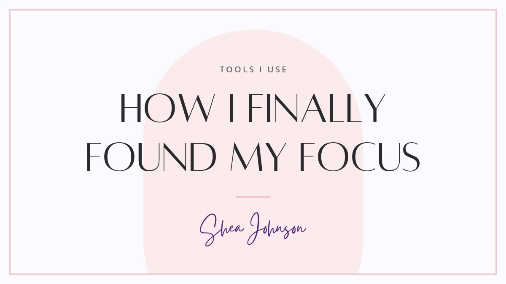

Disclosure: For links you click on and make a purchase, I may earn a commission at no extra cost to you. Thank you for supporting my content!
It’s always the things that are good for us — the ones we actually need — that we tend to overlook, right?
Well, for me, this tool was one of those things.
If I had never admitted that or faced that truth…
I would’ve never experienced this awesome and amazing tool that has been life-changing for me.
And I wouldn’t be here today sharing it with you.
Here’s the thing…
Some people are really good at completing their goals.
And how they became good at them is irrelevant right now.
People like that sometimes look at people like me — or us (if you feel like me) — as if there’s something wrong with us.
But there isn’t.
For whatever reason, we didn’t get the skills to focus.
And that’s fine.
The point is…
I found a platform called Focusmate that I’ve been using to focus and get things done.
Whenever I mention Focusmate to people who haven’t heard of it, they always say, “What is that?”
And I’m always excited to tell them…
It’s a platform where you’re partnered with an accountability buddy.
You can book your sessions in advance.
Or start an instant session.
And the platform will pair you with someone.
When your session starts…
You come on.
Introduce yourselves.
And share what you’re going to work on today.
Once I started using it, I couldn’t stop.
I had even been telling a friend about it for weeks — she kept saying no and fighting me on trying it out.
Now that she has tried it?
She texted me to say thank you and told me how much she loves it too now.
So if you want to get more done and you struggle with focusing…
Here’s my new secret weapon.
I’m putting my referral link below.
If you use this link, you will receive unlimited sessions for one month.
Focusmate has a free plan where you get 3 sessions per week.
If you do decide to use Focusmate, I hope you experience the same success that I have.
If you struggle with focus and getting things done:
👉 Try Focusmate with my referral link — Get unlimited sessions for one month free
If you want systems to organize your business:
👉 Check out my workbooks on Etsy — The organizational foundation that helps you use tools like Focusmate effectively
If you’re brand new to productivity tools:
There’s nothing wrong with needing help to focus.
Try the tool.
See what happens.
You’ve got this.
Best,
Shea